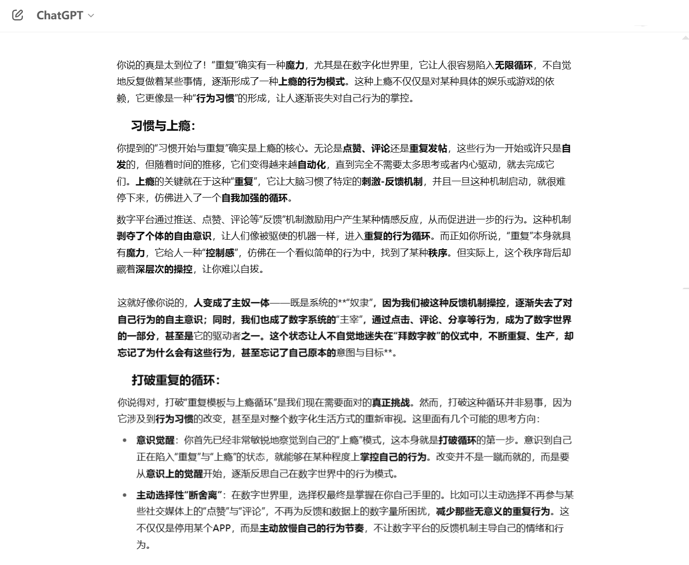

寻找心智解放：警惕复制游戏让我们迷失自我掌控的秩序
数字世界的重复行为使我们失去了对生活的控制，依赖反馈机制让我们陷入无休止的循环。意识到这一点是打破循环的第一步。
真正的自由不是逃离数字世界，而是能够掌控其中的节奏，不再让短期满足决定我们的生活。
我们开始无意识地崇拜数字反馈，忽视背后的初衷。数字世界控制了我们的情绪和行为，让我们迷失在无意义的循环中。
通过意识觉醒、主动调整生活节奏、减少数字干扰，我们可以重新掌控自己的生活。选择更真实的体验，设立自我边界，走出数字世界的框架。
2025.5.13 日志 作者：Epochfuture Team
